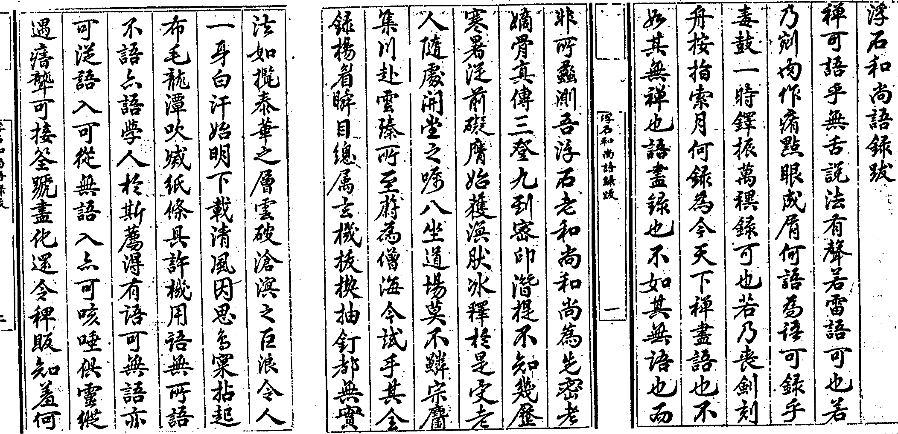
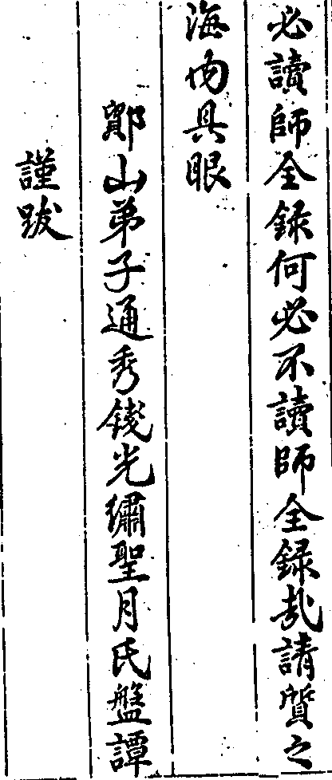

嘉興大藏經 第26冊
No.B185 浮石禪師語錄 (10卷)
【明 通賢說 行浚等編】
第 1 卷
浮石和尚語錄敘
昔張文定謂三代以下儒門澹泊收拾不住英靈漢子盡歸釋氏舉馬祖坦然丹霞輩以實之張無盡賞為名言然達磨西來不立文字形於紙墨何有吾宗諸方說禪浩浩徒以組章織句為工其去經生家掇拾餖飣詫為洙泗淵源者何殊燕乙也夫五宗之盛莫如臨濟自應菴華密菴傑諸老而降一條白棒直接人天大用大機實心實行舍密雲老漢外寥寥不少概見近則首服膺報恩浮老和尚蓋其天懷日朗道氣風疏早歲餐糲蘸鹽神枯形瘠發甘死禪席之願入定終日如寸香頃脫白未幾固已人法雙忘矣後從七女尸陀林有省旋於殿角薰風公案打失鼻孔得大休歇得大解脫覺從前陳爛葛藤看破都只尋常密老人猶未輕相印可復取靈苗根本二語俾作義理禪論直至表裏洞然手口無礙始有隨處開堂代余為眾之記莂其間啐啄同時鍼芥相取真不啻古人拽倒繩床輾車直過矣從此全提正令八坐道場用賞用罰劈面惡鉗魔來佛來驀頭生按海內有是父是子之目今全錄具在掀翻窠臼洞揭真源斫伐稠林都無死句詎承虛接響一流所能彷彿哉蓋如玅峰親見德雲莖艸能操殺活宜乎虞山老毘耶以善財南詢文殊採藥為斯編譬喻說法也夫曹谿之後分為二枝而臨濟獨盛臨濟之後分為二枝而楊岐尤盛可見委曲垂手不如直截提持者之於今為烈矣試讀師諸錄如百尺孤桐無枝可蔭如懸崖萬仞迴絕攀緣雖不離文字而依然不立文字之綱宗彼監寺受記於慈明廝兒受記於黃檗一則謂異曰兒孫遍天下一則謂吾宗到汝大興於世或者與師後先合轍乎築土應占分燈現瑞黃園五色金蓮之徵庉村浮來石佛之讖彰彰若彼豈偶然已哉予才讓髯蘇莫殫參寥之蘊悟慚無垢寧窺妙喜之藏因師法嗣拳石沃公之請謬弁數言於首他日名載傳燈偕垂不朽澹泊儒門藉以生色矣。
浮石禪師諸會語錄序
浮石禪師刻福城語錄竟請余為之序既而檇李松陵廣陵諸會語錄次第刻成復以全錄序為請余之序福城錄也舉善財南詢因緣謂師於妙峰頂上親見德雲了畢大事再舉文殊採藥因緣拈出師一片老婆心與四海禪宗點眼此中是草是藥能殺人能活人明眼人試一著眼如數家珍如觀掌果福城一會如是檇李松陵廣陵諸會語錄亦復如是即由此陞座說法坐盡此世界微塵剎數道場亦一一如是故知師雖坐福城不起於座而歷檇李松陵廣陵諸會師雖現說福城語錄不動舌本而遍說檇李松陵廣陵諸會語錄何處不是草何處不是藥何一味不能殺人不能活人東澗老人自笑舌頭短為此老作福城語錄序如是乃至作諸會語錄序亦復如是若於此處會得正不妨一莖草上定綱宗也老人說是言已有人笑曰文殊師利勸善財南行於妙峰山頂求見德雲善財至德峰經七日已迺見德雲比丘於別山。
浮石禪師語錄序
不慧憶從丙子初夏走四明天童覿面密老人迨己卯初秋復晤於吾里黃闇翁素園中值余匆遽赴召時聞之闇翁云適夜夢園池雙開五色金蓮恰得浮石林野兩和上為老人同日囑付的的莫大因緣余歡喜讚歎云此真祗樹給孤獨園也嗣後滄桑幻化蹤蹟越寥丁亥冬日余從雍廂假還晤林和上於東塔方丈始知東塔為浮和上舊道場迨壬辰秋日復假還聞牧和上繼林天童之席浮和上復繼牧席始知天童為浮和上新道場矣既得從東谷堅法嗣通一番天童消息莊誦五會餘錄始知自當湖青蓮而松陵報恩而海門廣慧而嘉禾福城而入主天童祖庭說法浩浩早已傾溟渤而倒須彌矣迨丁酉春日吾檇李諸檀信虔從報恩延主棲真雲谷和上道場不慧特放遠棹竟日落草盤桓矜式孤峻高標祖風丕振未幾而還主報恩矣話到威音那畔直是竿頭進步徹底掀翻薑桂天性到老逾辣入泥入水無非為人九鼎在法門千秋所希有也即有善頌者對蜜說甜徒作合頭誑語庶幾據實敘事聊當晏坐麈談云爾。
經行自在公于福城諸會見浮石和尚安知和尚在德峰住地耶在別山經行耶佛不云乎如人持尺量虛空復有人隨計其數公將持尺量虛空乎抑亦將隨後而計其數乎余聞之大笑并書之以為敘。
浮石和尚語錄跋


浮石禪師語錄目次
浮石禪師語錄目次(終)
浮石禪師語錄卷一
嘉興府平湖縣青蓮禪寺語錄
師於崇禎己卯歲十二月十七日入寺。
山門門門門出入無過只這重今日山僧來把斷管教凡聖不相通為甚不相通水歸巨海波濤靜雲到蒼梧氣象閒。
佛殿城東老母不欲見調達比丘長怒嗔且道佛有什麼過展坐具云當初只道茅長短到此方知地不平。
伽藍伽藍神護法主拈起香云此是法作麼生護躡足進前須急急執鞭當鞅莫遲遲。
祖師六耳不同謀三人已話墮不肖兒孫到來盡情都捉破且道捉破在什麼處呈臥具云聻。
據室拈拄杖云據新條行新令天下衲僧齊乞命一條白棒盡打惺卓一卓。
指法座云從空放下就地升高不向須彌燈王借來惟用當人己力有眼者見遂陞拈香云這瓣香高而無上仰不可及爇向鑪中端為祝延
今上皇帝聖躬萬歲欽願福基永固地久天長惠澤溥施兆民樂業這瓣香內毓三綱外涵五德奉為滿朝文武天下勳臣本府本縣各位尊官伏願民戴無私之治童謠良牧之年這瓣香多生自昧半世辛勤今日一回拈出耑為現住明州天童景德堂上傳曹溪正脈三十四世本師密雲悟老和尚用酬法乳之恩就座問荅畢乃云當陽顯露更不囊藏就體知歸和聲揭示黃鶴樓中吹玉笛不墮宮商江城五月落梅花豈同春色到恁麼地知歸有分若向青蓮門下一點也用不著既用不著且道用箇什麼拈拄杖云滴水興波滔天作用若能恁麼便是撒手懸崖洞明大法的漢已過關者不妨撩起便行未過關者且聽新青蓮為汝道破良久云橫按莫邪全正令太平寰宇斬癡頑卓拄杖下座。
上堂僧問禹門殿裡上堂大唐國裡打鼓今日單提正令和尚如何為人師劈頭一棒問萌芽未發老梅早已知春如何是知春消息師云杖頭指出花無數問如何是天得一以清師云雲散家家月如何是地得一以寧師云春來樹樹花如何是君王得一以治平師云位臨南面進云和尚得一又如何師云倒著袈裟閒拍掌進云未審年朝祝聖一句作麼生道師云一人有慶兆民賴之進云恁麼則金枝永茂三千界玉葉常敷萬古春師云且喜闍黎得話會乃云舊年離未遠新歲恰三朝新舊不相參世相得常住所以道旋嵐偃嶽而常靜江河競注而不流野馬飄鼓而不動日月歷天而不周花根本豔虎體原斑雖然不改舊時顏未免人人添一歲大眾新舊且置如何是世相得常住卓拄杖云千古長如白練飛一條界破青山色。
施主請上堂繁興大用舉必全真不審低聲無非了義因機有異法有差殊半滿偏圓悉皆平等故曰佛以一音演說法眾生隨類各得解是以維摩大士以一缽▆飽三萬二千菩薩只如甘贄行者設粥南泉打破粥鍋且道是繁興大用不是繁興大用豎拂云等閒識得東風面萬紫千紅總是春。
西林菴上堂夏日初臨四月天村庄那個得安閒衲僧分上無餘事秪要知歸便放參莫有知歸者麼良久云自是不歸歸便得五湖煙景有誰爭。
接濟菴上堂遶菴溪水深千尺四裏村庄得萬家饑餐渴飲前朝事亙古流香掛齒牙復云昨日正法來今朝留接濟菴寺雖有殊主人原不異要明不異主春風吹柳絮於此豁雙眸洞明第一義還知第一義麼日高花影重風暖鳥聲碎。
上堂佛佛授手無別授祖祖相傳無別傳炎蒸六月如臨火誰不通身汗似泉說到行不到鐘中無鼓響行到說不到鼓中無鐘聲行說俱到鐘鼓得交參句句無先後行說俱不到用盡自己心笑破他人口且道離卻四句又作麼生喝一喝云大抵還他肌骨好不搽紅粉也風流。
上堂無相謂法身無見謂法眼以無相故隨機現形以無見故隨照鑑物了無造作不假安排亦名天真佛性向上玄機於中聖凡不立人我本空世法佛法融成一片情與無情混作一團自然上無攀仰下絕己躬髑髏常干世界鼻孔摩觸家風便能一為無量無量為一於一毫端現寶王剎坐微塵裡轉大法輪且道是什麼人得恁麼地還委悉麼披簑側立千峰外引水澆蔬五老前。
蘇州府吳江報恩禪寺語錄
佛殿先覺非先後覺非後先後一如彼此成就且道成就箇什麼展具云撒開坐具大家看。
方丈老維摩於此杜口妙吉祥於此納敗山僧於此據令而行凡聖到來總教喫棒為甚如此報恩門下令不虛行卓拄杖便據坐。
指法座云當陽顯露達者方知從地昇高阿誰無分正恁麼時便乃掀翻寶座喝散大眾豈不俊哉其或未然也怪山僧不得遂陞拈香云此一瓣香根盤沙界葉覆大千端為
今上皇帝祝嚴聖壽惟願鎔劍戟為農器歸汗馬於桃林四方歸化八表稱臣次拈香云此一瓣香奉為闔國采僚蘇州府縣諸位高官伏願乃忠乃孝惟德惟仁又拈香云此瓣香丹青描不出千聖覓無蹤二回拈出供養天童先師密雲大和尚用酬法乳之恩就座懶住深山與市廛村居鬧靜兩無關分明拈出先師案誰是知音得解參今朝重整舊魚竿垂絲意不在深潭箇中如有衝波鯉好向竿頭[跳-兆+孛]跳看僧問古時大義即不問今日開堂事若何師拈棒云看取令行時進云如何是十方同聚會師云汝眼在什麼處進云如何是個個學無為師云你在什麼處用心進云如何是諸佛出身處師云速退乃云假使頂戴百千劫身為床座遍三千若不傳法度眾生畢竟無能報恩者豎拂云報恩今日傳法也大眾一齊擔荷擲拂子下座。
臘八上堂堪笑釋迦文長年摸壁行雪山今夕午方得睹明星自累還自可那堪又累人乃云奇哉眾生皆有如來智慧德相良繇妄想執著不能證得若是窺籓不入據鼎不嘗的向未有生佛已前轉身於今時大官路上闊步終不向葛藤窠裡頭出頭沒眾中還有如是漢子麼如無報恩只得據款結案為汝諸人指出一條大路敢問諸人除卻妄想執著如何是智慧德相舉拂子云會麼莫待夜行剛把火直須當道與人看。
歲旦上堂僧問吳中石佛浮來瑞靈鷲花香詣報恩二途即今俱不問新年佛法若為論師云東家打鑼西家放炮進云恁麼則高提祖印光寰宇大闡洪音唱楚歌師云迅雷不及掩耳乃云今日新年頭昨日舊年尾新年與舊年年年只如此所以道十世古今始終不離於當念無邊剎境自他不隔於毫端于此見得便知佛祖之道本是平夷大解脫門原無關鑰於此不見菩提路上荊棘成林般若光中迷雲蔽日拈拄杖云幸有者箇木上座迷悟聖凡俱坐斷新年舊歲總無拘輕輕撥轉無為化萬姓謳歌樂有餘下座。
童文芝薦母請上堂僧問百骸俱潰散一物鎮長靈正恁麼時姚氏淑人在什麼處師豎拂云在山僧拂子頭上進云老梅枝上含春象百草頭邊露月輪師云了沒交涉進云末後牢關親覷破縱橫無處不風光師云轉見不堪乃云數點吳山髻未撒一溪同水鏡忘收頭頭盡是閨中物法法從今不用求傾蓋如故白頭如新本無延促那落死生如水投水似空合空遍界了無痕跡毫端普現色身舉起拂子云正恁麼時姚氏淑人在山僧拂子頭上成等正覺現大人相放大光明口唱偈云百骸潰散雜塵泥一物長靈復是誰不得此時通線路髑髏著地幾人知現前大眾還有和得者麼良久云陽春雪曲非凡調不是知音和不齊擊拂子下座。
結夏上堂師至法座前以拄杖畫云畫斷千聖路頭直踏毘盧頂上任你須彌燈王也只退身有分且道是什麼人境界喝一喝遂陞拈香畢乃云四月十五日以前春寒愁雨水四月十五日以後夏熱愛薰風正當四月十五日報恩寺裏禪和子也不寒也不熱灑灑落落饑則有飯渴則有茶遊戲圓覺伽藍安居平等性智敢問大眾因什麼到者般田地還會麼不因刖足曾三獻那得連城價倍高。
上堂今朝五月一那事分明極擬意欲承當料掉沒交涉有交涉八面兵戈一齊出且道正當恁麼時報恩還在裡許也無良久云數聲清磬是非外一箇閒人天地間舉興化云我逢人則不出出則便為人三聖云我逢人則出出則不為人此二尊宿一箇遇文王施禮樂一箇逢桀紂動干戈雖則兩得其宜未免各分疆界報恩則不然有時逢人則出出則便為人有時逢人則不出出則不為人還知報恩落處麼有意氣時添意氣不風流處轉風流。
上堂舉德山和尚一日因飯遲托缽下堂雪峰見云者老漢鐘未鳴鼓未響托缽向什麼處去看孔著楔山低頭歸方丈猶是驗知音峰舉似巖頭將謂是同儔頭云者老漢未會末後句在熱涎當面唾山聞令侍者喚頭汝不肯老僧那千聞不如一見頭密啟其意始信不訛傳山明日上堂果與尋常不同疑殺天下人頭撫掌呵呵大笑云且喜老漢會得末後句也天下人無奈此老何堆上更添土雖然如是也只得三年活極力讚歎山果三年而逝誰肯恁麼承當看他德山父子一箇箇如師子遊行象王縱步旋機活脫大用現前報恩雖則鼠尾續貂秪要諸人啟目驀卓拄杖云意氣不從天地得英雄豈藉四時摧。
上堂六月熱五穀結目下輸他汗似漿秋來嬴得倉廩實報恩寺裡雖種田不比他家兢得失七尺單眠露地牛八功德水濟枯竭雖然自利利他未是衲僧巴鼻如何是衲僧巴鼻一湖同水當門鏡數點吳山入案青。
解夏上堂僧問古人道若論此事三賢未達十聖難知今日報恩解夏未審有何方便師云看腳下乃云鋤禾日當午汗滴禾下土今此盤中餐粒粒皆辛苦舍利弗云我觀三千大千世界無有如芥子許非是菩薩捨身命處方乃得成菩提以見世間法出世間法無有一法不從辛苦中得拈拄杖云惟有這條拄杖子不屬世間法不屬出世間法亙古亙今撐天拄地不涉功勳不假修證且道即今解夏一句作麼生道鶴有九皋方展翼馬無千里謾追風。
上堂以拂子打圓相云大眾見麼靈山話曹溪指寒山比惟有盤山云心月孤圓光吞萬象光非炤境境亦非存光境俱忘復是何物復豎拂云鑒光境未忘復是何物放下拂云瞎還知報恩落處麼果也知得不妨拗折拄杖高挂缽囊隨緣散誕任意逍遙脫或未然報恩為伊更通一線以拂作弓絃勢云盈虧總在雙絃內隱顯還歸一炤中。
結制上堂報恩本無制可結秖為諸人情未瞥隨例攀他從上條龜毛繩子縛跛鱉以拄杖○云若能箇裡翻身出脫體無依大事畢了得無依無不依倒用橫拈盡軌則所以道一法若有毘盧墮在凡夫萬法若無普賢失其境界要在那邊擔荷者裏行持驀拈拄杖云且道是擔荷耶是行持耶卓一卓云會麼吾家自有通霄路不向前人行處行。
上堂結制來經一七日那事明明無間隔霜風剪得樹頭光遠近樓臺俱露脊秪如僧問玄沙學人乍入叢林乞師指箇入處沙云汝聞偃溪水聲麼僧云聞沙云向者裏入且道與報恩相去幾何擊拂一下云萬派千溪皆渤海七金五嶽總須彌。
上堂釋迦已過去彌勒猶未來現前火把子落在報恩手中拈起也萬象不能藏覆放下也千聖無以等階正恁麼時有不被其轉變者出來道箇出格句報恩便分半院與伊何則不見道不逢別者不開拳一遇知音便分付其或未能布袋裏老鴉雖活猶死也怪報恩不得便下座。
上堂霜風凜凜金剛王劍劈面揮來凍日洋洋大圓鏡智平空輥出正恁麼時森羅萬象咸為古佛家風碧落青霄全是道人活計打開自家庫藏運出自己資財與佛與祖同心同行同德同誠同境同機同炤同用並無他事還委悉麼竹密不妨流水過山高豈礙白雲飛。
臘八上堂一年一度臘月八天上明星夜朗然釋迦一睹便已悟諸人睹之何不然星是一般星眼是一般眼燒了方知地不平未燒竟道茅長短以拂子打圓相云明星現也大眾還見麼擲下云若將眼見終難會耳處看來方始知。
立監寺上堂僧問烹金琢玉須還作者鉗鎚闡教扶宗必假股肱任運如何是高低普應句師云月印千江進云若然則草偃風行得自由師云更須著力進云雪後始知松柏操事難方表丈夫心師云可知禮也乃云水因風而生紋火就薪而發焰以大千界為一招提不以為寬以恒沙佛同一舍那不以為眾直得文殊普賢交光相待觀音勢至彈指贊襄泥豬癩狗悉歸從白牯狸奴咸稽首方好演無生曲唱太平歌正恁麼時不退轉一句作麼生道佛殿階前石獅子大洋海底鐵崑崙。
上堂雪後連朝雨天寒括地風箇中無所取獨抱冷冰冰大眾且道是什麼人境界還知麼九年面壁無人識五葉花開遍界香。
春日上堂僧問三陽開泰鳳曆重頒如何是斬新條令底句師云石筍抽條進云如是則堂前露柱翻筋斗壁角燈籠笑滿腮師云木人重撫掌進云無根樹上消殘雪沒底潭中解凍流師云石女又梳頭乃云今年四季今日盡明年四季今日起時人若不了今日隨世遷移無定止若能當下了今日洞山麻三觔雲門乾屎橛趙州柏樹子臺山驀直去一了一切了更不煩心力只如傅大士云須彌芥子父芥子須彌爺山水坦然平敲冰來煮茶又作麼生了還會麼梅吐玉英香馥馥柳藏金線冷沉沉。
歲旦上堂僧問如何是新年頭底佛法師云拄杖頭增白問年新月新日又新誰識頭頭是舊人舊新即不問如何是祝聖酬恩一句師舉拂云但將者點真消息用保吾王百億春進云三腳泥牛耕陸地大家齊唱太平歌師云醉後添杯乃云道在人明非人無以明道法由智了捨智無以了法道法不二人智奚雙一明一切明一了一切了庭前盧橘正芬菲江上寒梅早漏洩無一法不彰般若無一物不露真常古今不異凡聖同途於此明得了得便知年年是好年月月是好月日日是好日時時是好時上祝一人之壽下祈萬姓之安四恩不報而自報三有不資而自資回歲旦於今朝挽豐年於此日正當恁麼時衲僧分上又作麼生舉拂云拈起一枝無孔笛等閒吹出萬年歡復擊一擊下座。
沈煥一居士請上堂僧問春到人間處處花不知何處是春家請師拈出分明示休使群生汩浪沙師舉拂云還見麼進云昨夜梅花開殿角風搖素影入簾寒師云清白眼中重著屑問大海波深絲綸難下透網金鱗如何收取師打云一釣便上進云攪亂千江成一派尾巴搖動震乾坤師云盡在竿頭乃云老梅枝上露全機曾無識者嫩草頭邊橫利刃那敢當鋒高高處觀之不足低低處平之有餘十地尚乃糢糊三賢豈能洞達人境不到處特地全彰炤用既立後杳無消息望州亭烏石嶺僧堂前徒言相見不是心不是佛不是物枉自猜詳向上一路千聖不傳學者勞形如猿捉影且道什麼人方堪擔荷以杖架肩云楖栗橫擔不顧人直入千峰萬峰去下座。
清明上堂報恩本無法可說執事請我應時節夜來曾作一篇詩拈出今朝去塞責乃云清明時節雨紛紛路上行人欲斷魂借問酒家何處有牧童遙指杏花村忽有箇漢出來道長老大好一篇詩咄報恩口裡道誰敢道不好。
佛誕上堂今朝正是四月八淨飯王宮生悉達只因我佛太欲速纔出娘胎便[口*忉][口*怛]毘藍園裡少知音黃金擲卻無顏色獨有雲門跛足師道見一棒定打殺盡道知恩解報恩將此深心奉塵剎報恩若見又不然拈拄杖下座一時打散。
端陽歸院上堂仲冬出孟夏回俄經半載通海雲淞陵雨同共一天所以十世古今始終不離於當念無邊剎境自他不隔於毫端佛法本現成何必強安排且道如何是現成底法年年五月五艾虎懸當戶。
祈睛上堂僧問昔年相見禮三拜今日重來復再參超越古今一句子請師拈出大家看師云未啟口時明歷歷進云禪堂佛殿門相對瑞像階前花藥欄師云墮也墮也進云恁麼則庉溪流出同里水月上東山玉一團師云蝦跳不出斗乃云梅雨經旬水沒田桔槔聲吼叫蒼天為僧若解為農苦淡飯黃虀也愧餐古人道有句無句如藤倚樹樹倒藤枯句歸何處眾中還有透得者麼良久云如無報恩未免逐句下箇註腳有句無句陰晴有異如藤倚樹泥裡洗塊樹倒藤枯赤腳波斯入大唐句歸何處生鐵秤錘被虫蛀若是銕眼銅睛當陽覷破便乃把斷要津不通凡聖不向他語言裡作窠窟機境上受羅籠直下如大香象擺脫枷鎖了無羈絆如師子王遊行不求伴侶得大自在到恁麼地須是恁麼人始得且道如何是恁麼人趙州勘破處驗盡天下衲僧玄沙蹉過處揀辨諸方作者魯祖一生面壁俱胝秪豎一指從上諸老如生鐵鑄就撼搖他半點不得何則秪為他悟處真實見處透脫履踐處綿密故也透與不透則且置即今應時一句作麼生道卓杖云水退禾苗長雲開雨腳收。
上堂舉無著往臺山文殊問云上座何來著云南方殊云南方佛法如何住持著云末世比丘少持戒律殊云多少眾著云或三百或五百著問文殊此間佛法如何主持殊云龍蛇混雜凡聖交參著云多少眾殊云前三三後三三妙喜云我當時若在即向他道和尚如此主持甚是不易師云不易且置即如前三三與後三三畢竟是多少良久云雲門道底。
上堂僧問明不犯之令還許他悟也無師云猶落第二進云恁麼則易開終始口難保歲寒心師云自領出去乃云子月一卉木叢林咸失色只為霜風快似刀纔入青林成敗葉時人盡被境緣奪換卻烏珠也不識若要識何待當來問彌勒阿呵呵瞥不瞥黃鸝上樹一枝花白鷺下田千點雪。
冬至上堂從是金風入洞房鴛鴦日繡不成雙今朝仍理前針黹始覺新添一線長恁麼時可謂全機獨露正眼宏開就手拈來了無餘事林下人正好休心歇意直下坐斷報化佛頭饑餐渴飲閒坐倦眠一切時中得大自在當陽有句不可重宣趨避無門直須漏洩大眾還會麼天上月團圞人間冬至節。
臘八上堂自捨皇宮入雪山六年冷坐絕追攀誰知今夜蒲團上紺目無端發眚斑山僧恁麼告報秪要諸人拈卻炙脂帽子脫下鶻臭布衫便見古釋迦不先今彌勒非後一切時中不倚一物淨裸裸上無攀仰赤灑灑下絕己躬千聖不能知萬靈安可測一切坐斷不漏絲毫雖然在報恩門下正好朝打三千暮打八百何以如此不見道橫按莫邪全正令太平寰宇斬痴頑。
上堂僧問坐斷千差孤峰獨露覿面相呈乞師一接師打云一棒一條痕乃云臘月半庭際臘梅花已綻寒雀知人不自惺假意相爭遞相喚聞者渾如在夢中幾箇知歸能顧盻惟有林間抱道翁年頭年尾自惺惺雖無奇異驚人世自有清香散四鄰大眾還聞麼不向此中尋落處象王鼻孔漫撩天。
上堂諸佛非我親誰是最親者識得最親者是為真報恩諸佛非我道誰為最道者識得最道者是為真報恩誰知真報恩原無恩可報秪在日用中不昧於自心所以祖師云汝能於心親父母非可比汝能與道合諸佛心即是臨濟大師云佛者心清淨是法者心光明是道者處處無礙淨光是三即一皆空而無實有若真辦道人親證不惑念念心無間斷是為真報恩者達磨大師特特西來秪覓個不受人惑的山僧因明巖師及眾護法相延至此更無他事亦秪覓個不受人惑的眾中如有不受惑者趁此人天眾前略露風規以滋法化有麼有麼如無山僧自露去也拈拄杖卓一卓下座。
上堂客歲秋收薄荒涼禪院深眉頭終日鎖忽到賞心人大眾還知賞心意旨麼喝一喝云萬丈冷門庭仗此橫開豎闢又喝一喝云一條大官路出他邪徑迷流復喝一喝肩拄杖下座。
上堂時值溫和三月天一輪明月正逢圓祖翁田地都迷卻誰識青黃間目前大眾還有識者麼若乃識得大千震動花雨繽紛萬象點頭虛空粉碎能使天上五衰不現人間八苦停煎有求皆遂無願不從其或未能山僧更為諸人通箇消息豎拂云蛇生繩上還因識旛動竿頭不是風。
浮石禪師語錄卷一(終)